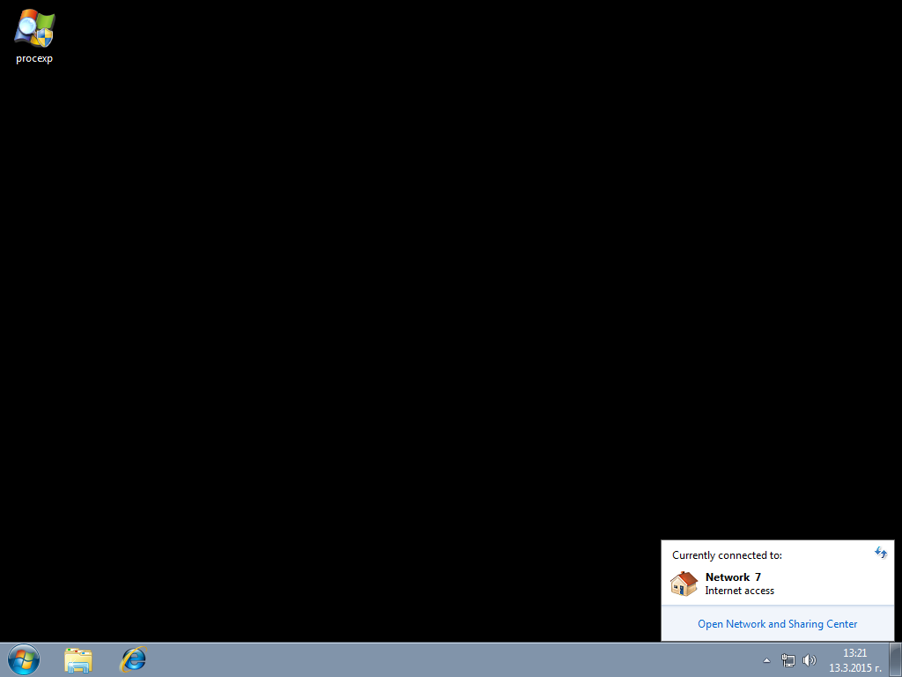

| Classic Shell http://www.classicshell.net/forum/ |
|
| Network button replacement http://www.classicshell.net/forum/viewtopic.php?f=13&t=4360 |
Page 1 of 1 |
| Author: | FFreestyleRR [ Fri Mar 13, 2015 4:34 am ] |
| Post subject: | Network button replacement |
Hi Ivo, Any chance you can add an replacement of the network menu to make it look more like the menu in Windows 7? At the moment when you left click the network button in the system tray one ugly purple panel is showing up as a part of the new Control Panel called PC Settings: And here is a screenshot from Windows 7 left clicking on the icon (BTW, right click menu is the same for both Windows 7 and 8).  Thanks! Regards, Georgi |
|
| Author: | Jcee [ Fri Mar 13, 2015 8:16 pm ] |
| Post subject: | Re: Network button replacement |
This feature has previously been requested, and to my knowledge there are no plans to re-implement the windows 7 method. (If Im wrong IVO will likely post though) |
|
| Author: | Gaurav [ Wed Mar 25, 2015 12:06 am ] |
| Post subject: | Re: Network button replacement |
Yes I agree, fixing the rest of the user interface would indeed be nice to have but then Classic Shell limits its scope to Start Menu and Explorer addons. Fixing the rest of the OS is a major undertaking. A LOT of functionality of the notification area (system tray) is crippled in Windows 10. Volume flyout is crap and can't show more than one output device. The volume control options are removed. Power flyout is shit and doesn't let you quickly change the power plan unless you use the Registry tweak to revert to the older power applet. Action Center/Notifications UI is a disaster. The Network flyout is the WORST. After Windows 7, overall the Network flyout UI has been crippled more and more and remains utterly broken in Windows 10: - The Windows 7 network pane was compact, pretty, colorful, elegant, informative and well structured yet powerful. - From this pane in Windows 7, you could access a folder to manage the order of wireless networks. This folder itself got removed in Windows 8 with no GUI way now to delete wireless profiles. Microsoft tells you to use the command line! - From this pane in Windows 7, you could access the Network adapter's Status dialog and access the WiFi connection Properties. Both these are removed in Windows 8+. - From this pane in Windows 7, you could see Virtual Wi-Fi (hosted wireless) connections when they were started. This functionality is also removed in Windows 8+ - From this pane in Windows 8, you could set a connection as metered. This is removed in Windows 10's Network flyout but if you revert to the Windows 8 version by taking permissions of registry keys and editing a value, it is possible. - From this pane in Windows 8, you could quickly see estimated data usage. This is removed in Windows 10's Network flyout but if you revert to the Windows 8 version by taking permissions of registry keys and editing a value, it is possible. - Earlier, you could connect to a VPN quickly. In Windows 10, you need 4 clicks just to get the VPN list and 6 clicks to connect. Your best option is to remain with Windows 7. Then again, if you heavily used Ethernet connections, Windows 7 removed quick access to enable/disable/repair them, or view their status and properties, unlike Windows XP which made it easy and convenient. |
|
| Author: | redblade8 [ Wed Feb 24, 2016 2:50 pm ] |
| Post subject: | Re: Network button replacement |
You're right about what is broken now. I didn't know that 'setting a metered connection' was lost in Windows 10. That would have proved to be a very useful feature if I couldn't get unlimited internet, which we did, so I never got to use the feature. When I was looking for network replacements, there is a program called 'net set man' maybe if you try it out , you might like it. But it isn't as simple as the windows 7 network icon in your taskbar tray. So, a program that acts more in this way is still needed. net set man just happens to be the closest replacement I could find when I was looking for one. |
|
| Author: | MarkJones [ Fri Oct 07, 2016 2:11 am ] |
| Post subject: | Re: Network button replacement |
i think this feature is no longer with us(( |
|
| Page 1 of 1 | All times are UTC - 8 hours [ DST ] |
| Powered by phpBB® Forum Software © phpBB Group https://www.phpbb.com/ |
|